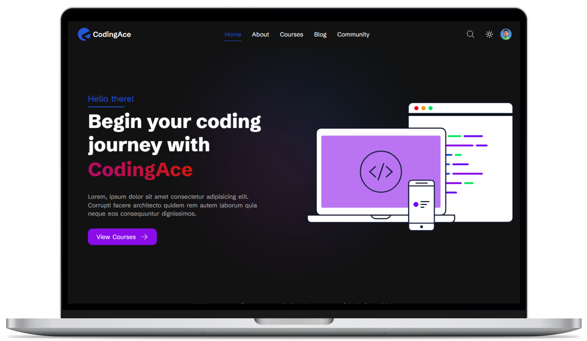
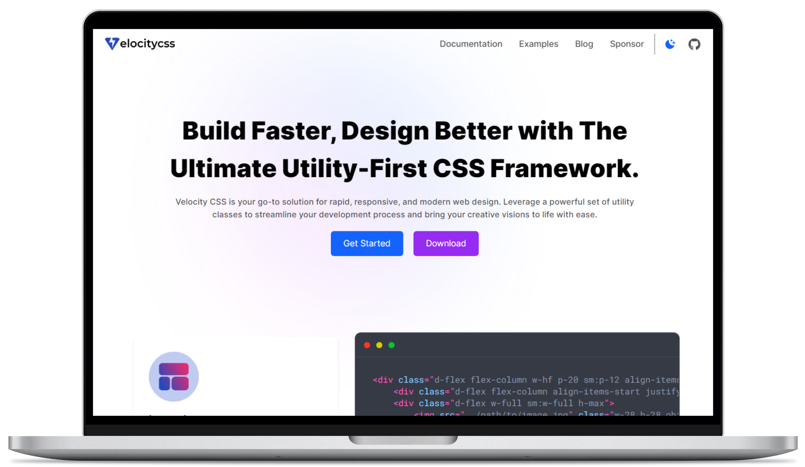
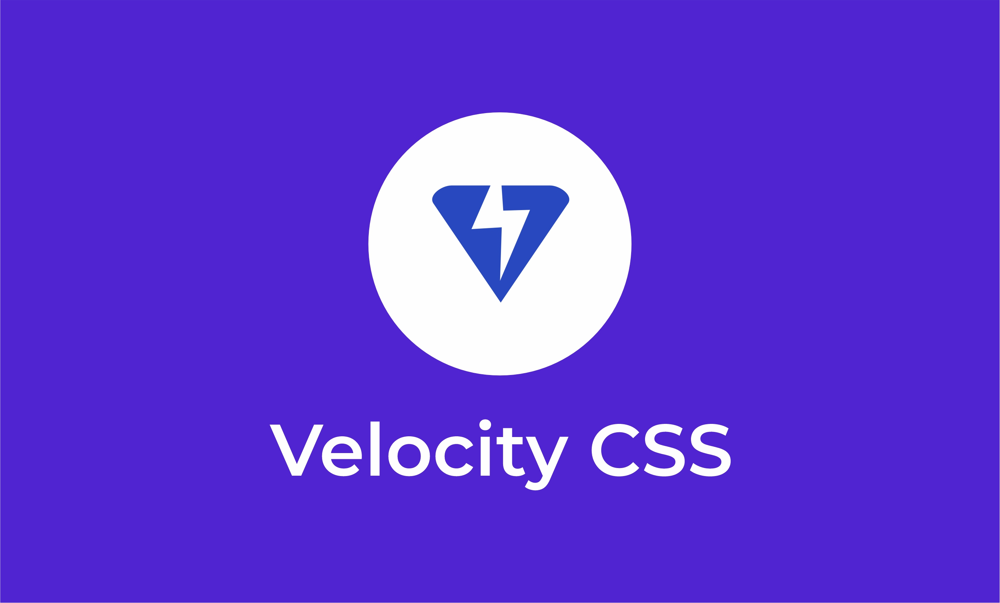
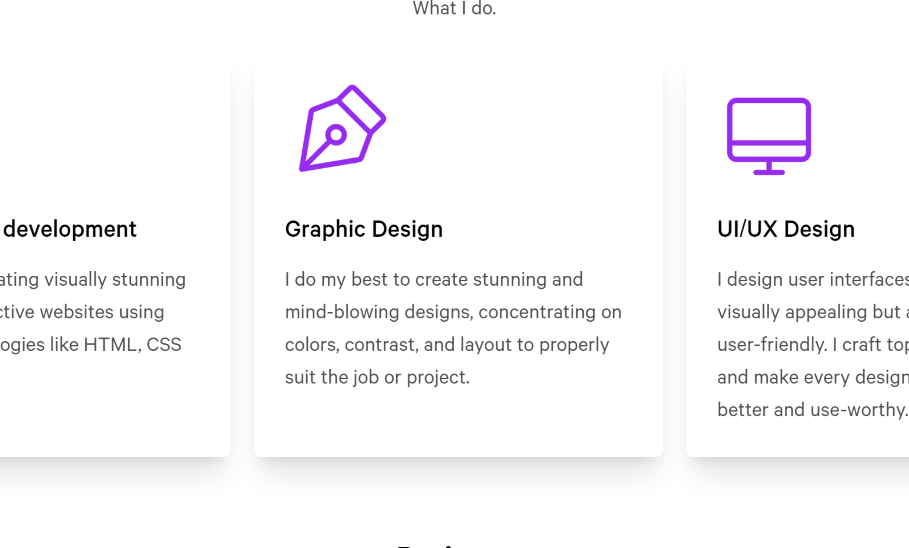
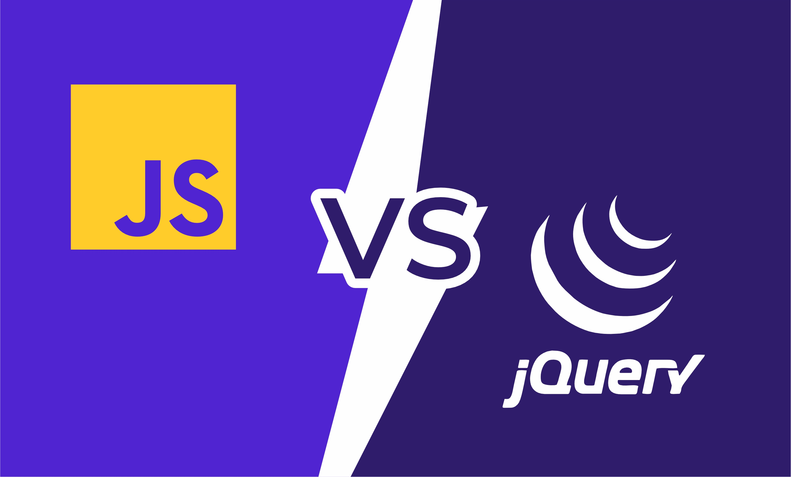

About Me
I am fullstack web developer, graphic designer and UI/UX designer, I started my journey as a self-taught frontend web developer in 2018, when I started looking into web development and then learnt even more valuable skills as time went on.
I was really interested in tech from 2016, so I started taking HTML lessons design themes myself by tweaking codes i can find online, then in 2019, I got to leave HTML and CSS then learnt about jQuery and JavaScript and then went on to learn PHP and MySQL.
Fast forward to today, I've learnt so much during five years and have also worked on creating a CSS utility Framework and other stunning sites.
Technologies and Tools
Technologies
- HTML
- CSS
- JavaScript
- jQuery
- PHP
- MySQL
Tools
- VScode
- Github
- Copilot
- Figma
- Coreldraw
- Photoshop
HTML
90%
CSS
80%
JavaScript
75%
PHP & MySQL
80%
JQuery
60%
Figma
40%
Services
What I do.
Fullstack Web development
I specialize in creating visually stunning and highly interactive websites using the latest technologies like HTML, CSS and JavaScript
Graphic Design
I do my best to create stunning and mind-blowing designs, concentrating on colors, contrast, and layout to properly suit the job or project.
UI/UX Design
I design user interfaces that are not only visually appealing but also intuitive and user-friendly. I craft top-notch designs and make every design I make even better and use-worthy.
Projects
Few of my Projects


Other Projects
Some of my designs on dribble.
Work Experience
Places I've worked and worked at.
Sept 2021 - Present
Leketech Computer World
Web Developer/Graphic Designer
- Design and Develop engaging and responsive websites to suit client's needs, including frontend and backend
- Design contents Like flyers, Posters, Notebooks, product labels for clients.
- Tutoring students on how to use tools and design elements properly while designing.
February 2024 - Present
Accolade Autos
Freelance Web Developer
- Working on both frontend and backend project with a team of developers like myself
- Designing workflow and UI for projects embarked on by the team.
Blog
Some of the articles I wrote.

Looking at the way CSS has evolved in the past years, another CSS framework debuts as a utility-first CSS framework - Velocity...

In today's digital age, creating visually appealing cards with HTML...

In the ever-evolving world of web development, developers are often faced...
Get in Touch
Got a project, and you need a partner, or you need someone to help design something for the web, or maybe you are puttomg together a team of Devs, I’m always open to discussing product design work or partnership opportunities.